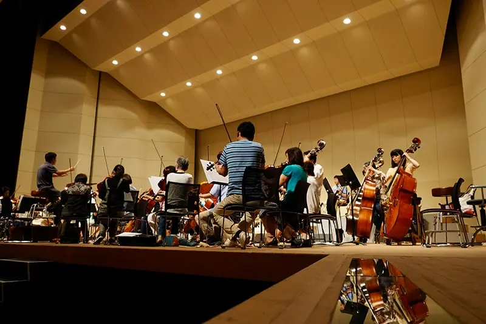

Bachelor of Music & Performing Arts
Program Overview
The Music & Performing Arts program offers a dynamic environment for aspiring musicians, actors, and performers to refine their craft. With a blend of theory, technique, and stage experience, students are empowered to express their creativity and pursue professional artistic careers.
What You'll Learn
- Music Theory and Composition
- Instrumental and Vocal Performance
- Acting Techniques and Stagecraft
- Sound Design and Production
- Performance History and Criticism
Career Opportunities
Graduates pursue careers as:
- Professional Musicians or Vocalists
- Stage and Film Actors
- Composers or Music Producers
- Performing Arts Educators
- Theatre Directors or Sound Designers
Performances & Productions
Students gain practical experience through recitals, concerts, plays, and interdisciplinary collaborations, showcasing their talent in campus and public venues.

Program Details
- Degree: B.A. in Music & Performing Arts
- Duration: 4 Years
- Mode: On-Campus / Hybrid
- Credits: 120
- Language: English
- Start Dates: September / January